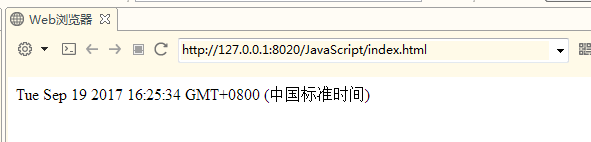

JavaScript的DOM和BOM
复习
1、写出JavaScript数据类型 2、写出JavaScript运算符 3、写出JavaScript条件语句 4、写出JavaScript循环语句 5、写出JavaScript函数
回顾
1、JavaScript数据类型 2、JavaScript运算符 3、JavaScript条件语句 4、JavaScript循环语句 5、JavaScript函数
内容
1、Js的DOM 2、Js的BOM 3、Js的计时器 4、Js的Cookie
目标
1、掌握Js查找HTML元素 2、掌握Js改变HTML内容 3、掌握JS改变HTML的CSS样式 4、掌握JS的Dom事件 5、掌握JS的window对象的使用 6、掌握Js的计时器 7、掌握Js操作Cookie
第三章 JavaScript的DOM
3.1 概述
通过 HTML DOM，可访问 JavaScript HTML 文档的所有元素。
当网页被加载时，浏览器会创建页面的文档对象模型（Document Object Model）。
HTML DOM 模型被构造为对象的树：

通过可编程的对象模型，JavaScript 获得了足够的能力来创建动态的 HTML。
- JavaScript 能够改变页面中的所有 HTML 元素。
- JavaScript 能够改变页面中的所有 HTML 属性。
- JavaScript 能够改变页面中的所有 CSS 样式。
- JavaScript 能够对页面中的所有事件做出反应。
3.2 查找HTML元素
通常，通过 JavaScript，您需要操作 HTML 元素。
为了做到这件事情，您必须首先找到该元素。有三种方法来做这件事：
- 通过 id 找到 HTML 元素
- 通过标签名找到 HTML 元素
- 通过类名找到HTML 元素
3.2.1 id找到HTML元素
在 DOM 中查找 HTML 元素的最简单的方法，是通过使用元素的 id。
本例查找 id="intro" 元素：
xxxxxxxxxxvar x=document.getElementById("intro");如果找到该元素，则该方法将以对象（在 x 中）的形式返回该元素。
如果未找到该元素，则 x 将包含 null。
3.2.2 标签名找到 HTML 元素
本例查找 id="main" 的元素，然后查找 id="main" 元素中的所有
元素：
xxxxxxxxxxvar x=document.getElementById("main");var y=x.getElementsByTagName("p");3.2.3 类名找到HTML 元素
本例通过 getElementsByClassName 函数来查找 class="intro" 的元素：
xxxxxxxxxxvar x=document.getElementsByClassName("intro");3.3 改变HTML
HTML DOM 允许 JavaScript 改变 HTML 元素的内容。
3.3.1 改变HTML输出流
JavaScript 能够创建动态的 HTML 内容：
今天的日期是： Tue Sep 19 2017 16:25:34 GMT+0800 (中国标准时间)
在 JavaScript 中，document.write() 可用于直接向 HTML 输出流写内容。
xxxxxxxxxx<html><body><script>document.write(Date());</script></body></html>运行结果：

3.3.2 改变HTML内容
修改 HTML 内容的最简单的方法时使用 innerHTML 属性。
如需改变 HTML 元素的内容，请使用这个语法：
document.getElementById(id).innerHTML="abcd";
本例改变了
元素的内容：
xxxxxxxxxx<html><body><p id="p1">Hello World!</p><script>document.getElementById("p1").innerHTML="abcd";</script></body></html>运行结果：

3.3.3 改变HTML属性
如需改变 HTML 元素的属性，请使用这个语法：
document.getElementById(id).attribute=新属性值
本例改变了 元素的 src 属性：
xxxxxxxxxx<html><body><img id="image" src="1.gif"><script>document.getElementById("image").src="2.jpg";</script></body></html>3.4 CSS变化
改变HTML的样式：
如需改变 HTML 元素的样式，请使用这个语法：
document.getElementById(id).style.property=新样式
下面的例子会改变
元素的样式：
xxxxxxxxxx<html><head><meta charset="utf-8"></head><body> <p id="p1">Hello World!</p><p id="p2">Hello World!</p><script>document.getElementById("p2").style.color="blue";document.getElementById("p2").style.fontFamily="Arial";document.getElementById("p2").style.fontSize="larger";</script><p>以上段落通过脚本修改。</p> </body></html>运行结果为：

3.5 DOM事件
HTML DOM 允许我们通过触发事件来执行代码。
比如以下事件：
- 元素被点击。
- 页面加载完成。
- 输入框被修改。
在接下来的章节，你会学到更多关于事件的知识。
本例改变了 id="id1" 的 HTML 元素的样式，当用户点击按钮时：
x<html><body><h1 id="id1">myH1</h1><button type="button" onclick="document.getElementById('id1').style.color='red'">button</button></body></html>点击前：

点击后：

HTML DOM 使 JavaScript 有能力对 HTML 事件做出反应。
HTML 事件的例子：
- 当用户点击鼠标时
- 当网页已加载时
- 当图像已加载时
- 当鼠标移动到元素上时
- 当输入字段被改变时
- 当提交 HTML 表单时
- 当用户触发按键时
在本例中，当用户在
元素上点击时，会改变其内容： xxxxxxxxxx<html><body><h1 onclick="this.innerHTML='Ooops!'">点击文本!</h1></body></html>
xxxxxxxxxx<html><body><h1 onclick="this.innerHTML='Ooops!'">点击文本!</h1></body></html>本例从事件处理器调用一个函数：
xxxxxxxxxx<html><head><script>function changetext(id){ id.innerHTML="Ooops!";}</script></head><body><h1 onclick="changetext(this)">点击文本!</h1></body></html>如需向 HTML 元素分配 事件，您可以使用事件属性。
xxxxxxxxxx<button onclick="displayDate()">点这里</button>HTML DOM 允许您使用 JavaScript 来向 HTML 元素分配事件：
xxxxxxxxxx<script>document.getElementById("myBtn").onclick=function(){displayDate()};</script>事件种类介绍
onload 和 onunload 事件会在用户进入或离开页面时被触发。
onload 事件可用于检测访问者的浏览器类型和浏览器版本，并基于这些信息来加载网页的正确版本。
onload 和 onunload 事件可用于处理 cookie。
xxxxxxxxxx<body onload="checkCookies()">onchange 事件常结合对输入字段的验证来使用。
下面是一个如何使用 onchange 的例子。当用户改变输入字段的内容时，会调用 upperCase() 函数。
xxxxxxxxxx<input type="text" id="fname" onchange="upperCase()">onmouseover 和 onmouseout 事件可用于在用户的鼠标移至 HTML 元素上方或移出元素时触发函数。
xxxxxxxxxx<html><head><meta charset="utf-8"></head><body><div onmouseover="mOver(this)" onmouseout="mOut(this)" style="background-color:#D94A38;width:120px;height:20px;padding:40px;">Mouse Over Me</div><script>function mOver(obj){ obj.innerHTML="Thank You"}function mOut(obj){ obj.innerHTML="Mouse Over Me"}</script></body></html>onmousedown, onmouseup 以及 onclick 构成了鼠标点击事件的所有部分。首先当点击鼠标按钮时，会触发 onmousedown 事件，当释放鼠标按钮时，会触发 onmouseup 事件，最后，当完成鼠标点击时，会触发 onclick 事件。
xxxxxxxxxx<html><head><meta charset="utf-8"></head><head><script>function lighton(){ document.getElementById('myimage').src="bulbon.gif";}function lightoff(){ document.getElementById('myimage').src="bulboff.gif";}</script></head><body><img id="myimage" onmousedown="lighton()" onmouseup="lightoff()" src="bulboff.gif" width="100" height="180" /><p>点击不释放鼠标灯将一直亮着!</p></body></html>3.6 EventListener
addEventListener() 方法
在用户点击按钮时触发监听事件：
xxxxxxxxxxdocument.getElementById("myBtn").addEventListener("click", displayDate);addEventListener() 方法用于向指定元素添加事件句柄。
addEventListener() 方法添加的事件句柄不会覆盖已存在的事件句柄。
你可以向一个元素添加多个事件句柄。
你可以向同个元素添加多个同类型的事件句柄，如：两个 "click" 事件。
你可以向任何 DOM 对象添加事件监听，不仅仅是 HTML 元素。如： window 对象。
addEventListener() 方法可以更简单的控制事件（冒泡与捕获）。
当你使用 addEventListener() 方法时, JavaScript 从 HTML 标记中分离开来，可读性更强， 在没有控制HTML标记时也可以添加事件监听。
你可以使用 removeEventListener() 方法来移除事件的监听。
语法：
xxxxxxxxxxelement.addEventListener(event, function, useCapture);第一个参数是事件的类型 (如 "click" 或 "mousedown").
第二个参数是事件触发后调用的函数。
第三个参数是个布尔值用于描述事件是冒泡还是捕获。该参数是可选的。
注意:不要使用 "on" 前缀。 例如，使用 "click" ,而不是使用 "onclick"。
当用户点击元素时弹出 "Hello World!" :
xxxxxxxxxxelement.addEventListener("click", myFunction);function myFunction() { alert ("Hello World!");}addEventListener() 方法允许向同个元素添加多个事件，且不会覆盖已存在的事件：
xxxxxxxxxxelement.addEventListener("click", myFunction);element.addEventListener("click", mySecondFunction);你可以向同个元素添加不同类型的事件：
xxxxxxxxxxelement.addEventListener("mouseover", myFunction);element.addEventListener("click", mySecondFunction);element.addEventListener("mouseout", myThirdFunction);addEventListener() 方法允许你在 HTML DOM 对象添加事件监听， HTML DOM 对象如： HTML 元素, HTML 文档, window 对象。或者其他支出的事件对象如: xmlHttpRequest 对象。
当用户重置窗口大小时添加事件监听：
xxxxxxxxxxwindow.addEventListener("resize", function(){ document.getElementById("demo").innerHTML = sometext;});事件冒泡或事件捕获？
事件传递有两种方式：冒泡与捕获。
事件传递定义了元素事件触发的顺序。 如果你将
元素插入到
元素, 哪个元素的 "click" 事件先被触发呢？
在 *冒泡 *中，内部元素的事件会先被触发，然后再触发外部元素，即：
元素的点击事件先触发，然后会触发
在 *捕获 *中，外部元素的事件会先被触发，然后才会触发内部元素的事件，即：
元素的点击事件。
addEventListener() 方法可以指定 "useCapture" 参数来设置传递类型：
xxxxxxxxxxaddEventListener(event, function, useCapture);默认值为 false, 即冒泡传递，当值为 true 时, 事件使用捕获传递。
xxxxxxxxxxdocument.getElementById("myDiv").addEventListener("click", myFunction, true);removeEventListener() 方法移除由 addEventListener() 方法添加的事件句柄:
xxxxxxxxxxelement.removeEventListener("mousemove", myFunction);3.7 元素
3.7.1 创建新元素
如需向 HTML DOM 添加新元素，您必须首先创建该元素（元素节点），然后向一个已存在的元素追加该元素。
xxxxxxxxxx<div id="div1"><p id="p1">这是一个段落。</p><p id="p2">这是另一个段落。</p></div><script>var para=document.createElement("p");var node=document.createTextNode("这是一个新段落。");para.appendChild(node);var element=document.getElementById("div1");element.appendChild(para);</script>例子说明：
这段代码创建新的
元素：
var para=document.createElement("p");
如需向
元素添加文本，您必须首先创建文本节点。这段代码创建了一个文本节点：
var node=document.createTextNode("这是一个新段落。");
然后必须向
元素追加这个文本节点：
para.appendChild(node);
最后必须向一个已有的元素追加这个新元素。
这段代码找到一个已有的元素：
var element=document.getElementById("div1");
以下代码在已存在的元素后添加新元素：
element.appendChild(para);
3.7.2 删除已有的 HTML 元素
以下代码演示了如何删除元素：
xxxxxxxxxx<div id="div1"><p id="p1">这是一个段落。</p><p id="p2">这是另一个段落。</p></div><script>var parent=document.getElementById("div1");var child=document.getElementById("p1");parent.removeChild(child);</script>例子说明：
这个 HTML 文档含有拥有两个子节点（两个
元素）的
xxxxxxxxxx<div id="div1"><p id="p1">这是一个段落。</p><p id="p2">这是另一个段落。</p></div>找到 id="div1" 的元素：
var parent=document.getElementById("div1");
找到 id="p1" 的
元素：
var child=document.getElementById("p1");
从父元素中删除子元素：
parent.removeChild(child);
如果能够在不引用父元素的情况下删除某个元素，就太好了。不过很遗憾。DOM 需要清楚您需要删除的元素，以及它的父元素。
这是常用的解决方案：找到您希望删除的子元素，然后使用其 parentNode 属性来找到父元素：
var child=document.getElementById("p1"); child.parentNode.removeChild(child);
第四章 浏览器BOM
浏览器对象模型 (BOM) 使 JavaScript 有能力与浏览器"对话"。
浏览器对象模型 (BOM):(Browser Object Model)尚无正式标准。
由于现代浏览器已经（几乎）实现了 JavaScript 交互性方面的相同方法和属性，因此常被认为是 BOM 的方法和属性。
4.1 window
所有浏览器都支持 window 对象。它表示浏览器窗口。
所有 JavaScript 全局对象、函数以及变量均自动成为 window 对象的成员。
全局变量是 window 对象的属性。
全局函数是 window 对象的方法。
甚至 HTML DOM 的 document 也是 window 对象的属性之一：
xxxxxxxxxxwindow.document.getElementById("header");与此相同：
xxxxxxxxxxdocument.getElementById("header");4.1.1 window的尺寸
有三种方法能够确定浏览器窗口的尺寸。
对于Internet Explorer、Chrome、Firefox、Opera 以及 Safari：
- window.innerHeight - 浏览器窗口的内部高度(包括滚动条)
- window.innerWidth - 浏览器窗口的内部宽度(包括滚动条)
对于 Internet Explorer 8、7、6、5：
- document.documentElement.clientHeight
- document.documentElement.clientWidth
或者
- document.body.clientHeight
- document.body.clientWidth
实用的 JavaScript 方案（涵盖所有浏览器）：
xxxxxxxxxxvar w=window.innerWidth||document.documentElement.clientWidth||document.body.clientWidth;var h=window.innerHeight||document.documentElement.clientHeight||document.body.clientHeight;该例显示浏览器窗口的高度和宽度：（不包括工具栏/滚动条）
4.1.2 Window Screen
- 可用宽度：screen.availWidth 属性返回访问者屏幕的宽度，以像素计，减去界面特性，比如窗口任务栏。
返回您的屏幕的可用宽度：
xxxxxxxxxxdocument.write("可用宽度: " + screen.availWidth);以上代码输出为：
可用宽度: 1920
- 可用高度：screen.availHeight 属性返回访问者屏幕的高度，以像素计，减去界面特性，比如窗口任务栏。
返回您的屏幕的可用高度：
xxxxxxxxxxdocument.write("可用高度: " + screen.availHeight);以上代码将输出：
可用高度: 1040
4.1.3 Window Location
window.location 对象用于获得当前页面的地址 (URL)，并把浏览器重定向到新的页面。
window.location 对象在编写时可不使用 window 这个前缀。 一些例子：
一些实例:
- location.hostname 返回 web 主机的域名
- location.pathname 返回当前页面的路径和文件名
- location.port 返回 web 主机的端口 （80 或 443）
- location.protocol 返回所使用的 web 协议（http:// 或 https://）
Window Location Href：
location.href 属性返回当前页面的 URL。
代码：
xxxxxxxxxxdocument.write(location.href);以上代码输出为：
Window Location Pathname：
location.pathname 属性返回 URL 的路径名。
代码：
xxxxxxxxxxdocument.write(location.pathname);以上代码输出为：
/js/my.html
Window Location Assign：
location.assign() 方法加载新的文档。
加载一个新的文档：
xxxxxxxxxx<html><head><script>function newDoc() { window.location.assign("http://www.baidu.com/") }</script></head><body><input type="button" value="Load new document" onclick="newDoc()"></body></html>4.1.4 Window History
window.history 对象包含浏览器的历史。
window.history 对象在编写时可不使用 window 这个前缀。
为了保护用户隐私，对 JavaScript 访问该对象的方法做出了限制。
一些方法：
- history.back() - 与在浏览器点击后退按钮相同
xxxxxxxxxx<html><head><script>function goBack() { window.history.back() }</script></head><body><input type="button" value="Back" onclick="goBack()"></body></html>- history.forward() - 与在浏览器中点击按钮向前相同
xxxxxxxxxx<html><head><script>function goForward() { window.history.forward() }</script></head><body><input type="button" value="Forward" onclick="goForward()"></body></html>4.1.5 Window Navigator
window.navigator 对象在编写时可不使用 window 这个前缀。
xxxxxxxxxx<div id="example"></div><script>txt = "<p>浏览器代号: " + navigator.appCodeName + "</p>";txt+= "<p>浏览器名称: " + navigator.appName + "</p>";txt+= "<p>浏览器版本: " + navigator.appVersion + "</p>";txt+= "<p>启用Cookies: " + navigator.cookieEnabled + "</p>";txt+= "<p>硬件平台: " + navigator.platform + "</p>";txt+= "<p>用户代理: " + navigator.userAgent + "</p>";txt+= "<p>用户代理语言: " + navigator.systemLanguage + "</p>";document.getElementById("example").innerHTML=txt;</script> 4.2 JavaScript计时事件
setInterval() 间隔指定的毫秒数不停地执行指定的代码：
每三秒弹出 "hello" ：
xxxxxxxxxxsetInterval(function(){alert("Hello")},3000);实例展示了如何使用 setInterval() 方法，但是每三秒弹出一次对用户体验并不好。
以下实例将显示当前时间。 setInterval() 方法设置每秒钟执行一次代码，就是手表一样。
xxxxxxxxxxvar myVar=setInterval(function(){myTimer()},1000);function myTimer(){var d=new Date();var t=d.toLocaleTimeString();document.getElementById("demo").innerHTML=t;}clearInterval() 方法用于停止 setInterval() 方法执行的函数代码。
代码：
xxxxxxxxxx<p id="demo"></p><button onclick="myStopFunction()">Stop time</button><script>var myVar=setInterval(function(){myTimer()},1000);function myTimer(){var d=new Date();var t=d.toLocaleTimeString();document.getElementById("demo").innerHTML=t;}function myStopFunction(){clearInterval(myVar);}</script>setTimeout() 方法会返回某个值。在上面的语句中，值被储存在名为 t 的变量中。假如你希望取消这个 setTimeout()，你可以使用这个变量名来指定它。
window.setTimeout("javascript 函数",毫秒数);
第一个参数是含有 JavaScript 语句的字符串。这个语句可能诸如 "alert('5 seconds!')"，或者对函数的调用，诸如 alertMsg()"。
第二个参数指示从当前起多少毫秒后执行第一个参数。
提示：1000 毫秒等于一秒。
等待3秒，然后弹出 "Hello":
xxxxxxxxxxsetTimeout(function(){alert("Hello")},3000);clearTimeout() 方法用于停止执行setTimeout()方法的函数代码。
xxxxxxxxxxvar myVar;function myFunction(){myVar=setTimeout(function(){alert("Hello")},3000);}function myStopFunction(){clearTimeout(myVar);}4.3 JavaScript Cookie
JavaScript Cookie
Cookie 用于存储 web 页面的用户信息。
Cookie是什么？
Cookie 是一些数据, 存储于你电脑上的文本文件中。
当 web 服务器向浏览器发送 web 页面时，在连接关闭后，服务端不会记录用户的信息。
Cookie 的作用就是用于解决 "如何记录客户端的用户信息":
- 当用户访问 web 页面时，他的名字可以记录在 cookie 中。
- 在用户下一次访问该页面时，可以在 cookie 中读取用户访问记录。
Cookie 以名/值对形式存储，如下所示:
username=John Doe
当浏览器从服务器上请求 web 页面时， 属于该页面的 cookie 会被添加到该请求中。服务端通过这种方式来获取用户的信息。
设置Cookie代码：
xxxxxxxxxxfunction setCookie(cname,cvalue,exdays){ var d = new Date(); d.setTime(d.getTime()+(exdays*24*60*60*1000)); var expires = "expires="+d.toGMTString(); document.cookie = cname + "=" + cvalue + "; " + expires;}获取Cookie的值：
xxxxxxxxxxfunction getCookie(cname){ var name = cname + "="; var ca = document.cookie.split(';'); for(var i=0; i<ca.length; i++) { var c = ca[i].trim(); if (c.indexOf(name)==0) return c.substring(name.length,c.length); } return "";}检查Cookie的值：
xxxxxxxxxxfunction checkCookie(){ var username=getCookie("username"); if (username!="") { alert("Welcome again " + username); } else { username = prompt("Please enter your name:",""); if (username!="" && username!=null) { setCookie("username",username,365); } }}完整的Cookie的示例：
xxxxxxxxxxfunction setCookie(cname,cvalue,exdays){ var d = new Date(); d.setTime(d.getTime()+(exdays*24*60*60*1000)); var expires = "expires="+d.toGMTString(); document.cookie = cname + "=" + cvalue + "; " + expires;} function getCookie(cname){ var name = cname + "="; var ca = document.cookie.split(';'); for(var i=0; i<ca.length; i++) { var c = ca[i].trim(); if (c.indexOf(name)==0) return c.substring(name.length,c.length); } return "";} function checkCookie(){ var user=getCookie("username"); if (user!="") { alert("Welcome again " + user); } else { user = prompt("Please enter your name:",""); if (user!="" && user!=null) { setCookie("username",user,365); } }}作业题
1.写一个点击“大”、“中”、“小”三个超链，实现页面部分文字随之分别为：18，14，12号字体的切换效果。
2.加入适当的css美化页面 如效果图所示
使用JavaScript为网页添加动态效果并实现与用户的交互功能
<div id="txt">
<h5>JavaScript为网页添加动态效果并实现与用户交互的功能。</h5>
<p>111111111111111111111111111111111</p>
<p>222222222222222222222222222222222</p>
<p>333333333333333333333333333333333</p>
</div>
<form>
<!--当点击相应按钮，执行相应操作，为按钮添加相应事件-->
<input type="button" value="改变颜色" onClick="changecolor()" >
<input type="button" value="改变宽高" onClick="changewidth()">
<input type="button" value="隐藏内容" onClick="hidetext()">
<input type="button" value="显示内容" onClick="showtext()">
<input type="button" value="取消设置" onClick="queXiao()">
</form>
3.使用html+css+js技术编写一个完整的表格列表内容中 复选框的全选 反选效果
见效果图面试题
1、实现函数 isInteger(x) 来判断 x 是否是整数
2、写一个少于 80 字符的函数，判断一个字符串是不是回文字符串
3、for (var i = 0; i < 5; i++) {
setTimeout(function() {
console.log(new Date, i);
}, 1000);
}
console.log(new Date, i);
输出的结果是什么？